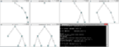
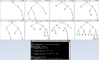

Expression Displayer/Evaluator
This program takes as input a file containing fully parenthesized logical expressions. ExpressionDisplayer uses the TreeDisplay class that was provided as part of the assignment to display the expression. Before doing so the expression is sent to the ParseError class which checks that the expression is fully parenthesized, and no non-atoms are used and no illegal operations included. It then uses the Expression class to normalize the expression, and displays it. ExpressionEvaluator performs the same checks, sets the atoms given in the file, and calls the evaluate method of Expression to determine the value of the expression.
Add stdlib and algs4 jars to classpath. Run with java ExpressionDisplayer data.txt or java ExpressionEvaluator data2eval.txt
 {kind=link}
{kind=link}
BurrowsWheeler/MoveToFront
Implements a Burrows Wheeler transform using a circular suffix array. The result of this is used by the MoveToFront class that performs move to front encoding
FUSE File System
Implements a two-level file system for a Linux system in C using FUSE. Directories are tracked in a hidden file named .directories. Data is stored in 512 byte blocks in a file named .disk. Root directory contains only subdirectories, subdirectories contain only regular files, all files are full access, and files cannot be truncated.
5-stage Pipeline with Cache Simulation
Takes a trace file and simulates a pipeline processor with 5 stages in C. When each instruction finishes the cycle of completion and type of instruction is printed out. When last instruction is processed the total number of cycles is displayed. Three different branch prediction methods are simulated: assume not taken, 1 bit, and 2 bit. A cache is simulated for loads and stores. Extra cycles are added for cache misses, and incorrect branch prediction. Stalls for loads that change the source register the following instruction are also simulated.
Compile with gcc -o pipeline pipeline.c and gcc -o cache cache.c. Run pipeline with pipeline -trace_file_name -prediction_method -trace_view_on -cache_size -cache_assoc. Run cache by cache -trace_file_name -trace_view_on -cache_size -cache_associativity
- prediction_method: 0, 1, or 2. 0 for assume not taken, 1 for 1bit prediction, and 2 for 2bit prediction.
- trace_view_on: 1 to display type and cycle of completion of each instruction. 0 to only display number of cycles for execution.
Snake Game
Implements snake game with goal to collect the frogs (green dots) in MIPS. Runs in MARS simulator with led display and keypad.
Run executable jar file to launch MARS. Open SnakeGame.asm in MARS. Select Tools -> Keypad and LED Display Simulator.
Click on Connect to MIPS. Assemble then run SnakeGame to begin.
{kind=link}